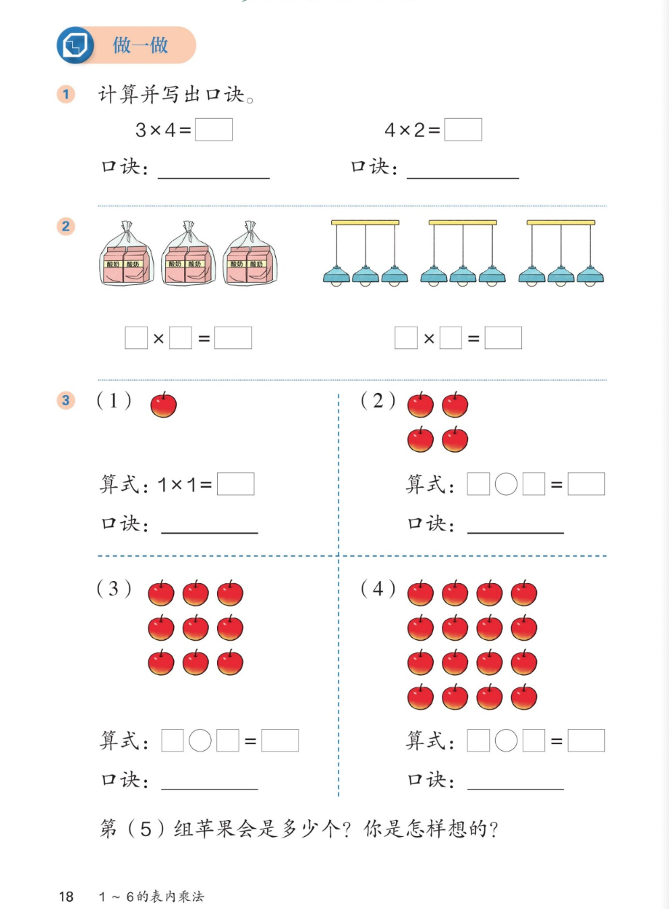

🍎 1~6的表内乘法 · 课本第 18 页 · 做一做（口诀巩固）
人教版《数学》二年级上册 · 有声图文带读 · 先想后看解析
题数
6
认知
2
强化
3
拓展
1
本页重点
看图列式 + 找规律（几乘几）
🎧 分两步学：
① 解析教材图片
——纯声音读图，读到哪一块哪一块闪动提示；关键处先倒计时让你思考，再在图片下方给出解析并朗读。
② 分层提问练习
——六道分层题（认知 / 强化 / 拓展），先思考再展开解析、朗读参考答案；这一步不再回到图片。
也可以随时点任意一句话、图上任意一块单独听；点课本文字卡还会展开答案。
教材图片（点块听读，读到哪块哪块闪）

📖 人教版《数学》二年级上册 · 课本第 18 页 · 图片仅供个人学习，版权归人民教育出版社所有
🤔 想一想（点我可跳过）
课本的文字（点句子：听读 + 看答案）
第 1 题
计算并写出口诀：3×4=□；4×2=□
看答案 ▾
3×4=12
，口诀：
三四十二
4×2=8
，口诀：
二四得八
第 2 题（左）
3 袋面粉、每袋 2 包：□×□=□
看答案 ▾
列式：
2×3=6 或 3×2=6（3 个 2 相加）
口诀：
二三得六
第 2 题（右）
3 根横杆、每杆 3 盏灯：□×□=□
看答案 ▾
列式：
3×3=9（3 个 3 相加）
口诀：
三三得九
第 3 题 (1)(2)
(1) 1 个苹果；(2) 4 个苹果（2 行 2 列）
看答案 ▾
(1)：
算式 1×1=
1
，口诀：
一一得一
(2)：
算式 2×2=
4
，口诀：
二二得四
第 3 题 (3)(4)
(3) 9 个苹果（3 行 3 列）；(4) 16 个苹果（4 行 4 列）
看答案 ▾
(3)：
算式 3×3=
9
，口诀：
三三得九
(4)：
算式 4×4=
16
，口诀：
四四十六
第 3 题 · 想一想
第 (5) 组苹果会是多少个？你是怎样想的？
看答案 ▾
想法：
第几组就是
几行几列、几乘几
——第 1 组 1×1，第 2 组 2×2……
第 (5) 组：
5×5=
25
（个），口诀：五五二十五
💡 思维种子
正方形点阵的规律
看答案 ▾
得数：
1、4、9、16、25……都是
几乘几
（正方形点阵的个数）。
相邻差：
1→4 多 3，4→9 多 5，9→16 多 7，16→25 多 9——每次多的是一个
单数
！
分层提问练习（先想后看解析）
🔢
认知
3×4 等于多少？口诀是什么？
看解析
🤔 想一想
解析：
3×4=12
，口诀：
三四十二
加法验证：
4+4+4=12（3 个 4 相加）
🔢
认知
4×2 等于多少？口诀是什么？
看解析
🤔 想一想
解析：
4×2=8
，口诀：
二四得八
加法验证：
4+4=8（2 个 4 相加）
🍎
强化
苹果 (2)(3)(4) 各有多少个？算式怎么写？
看解析
🤔 想一想
解析：
(2)：
2 行 2 列 → 2×2=
4
（个）
(3)：
3 行 3 列 → 3×3=
9
（个）
(4)：
4 行 4 列 → 4×4=
16
（个）
💡 第几组就是几乘几
🧠
强化
第 (5) 组苹果是多少个？说说你的想法。
看解析
🤔 想一想
解析：
规律：
第几组就是几行几列、几乘几
第 (5) 组：
5×5=
25
（个），口诀五五二十五
💡 1、4、9、16 的后面就是 25
🛒
强化
面粉图和吊灯图分别怎样列式？口诀各是什么？
看解析
🤔 想一想
解析：
面粉：
3 个 2 相加 → 2×3=6（或 3×2=6），口诀二三得六
吊灯：
3 个 3 相加 → 3×3=9，口诀三三得九
💡 先看「每份几个、有几份」，再列乘法
🚀
拓展
照这样第 (6) 组是多少个？说说你的新发现。
看解析
🤔 想一想
解析（开放题）：
第 (6) 组：
6 行 6 列，6×6=
36
（个）
新发现：
得数 1、4、9、16、25、36，相邻依次多 3、5、7、9、11——每次多的是一个
单数
。
🌈 写出 6×6=36 并讲出「每次多的都是单数」就算讲明白
① 解析教材图片
② 分层提问练习
⏹ 停止
纯声音 + 高亮跟随 · 想好才出解析
← 返回导航